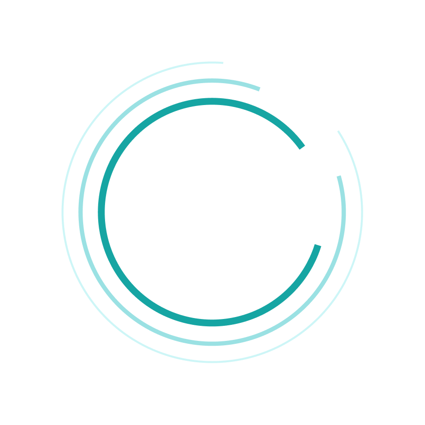

Océan Sûr
Para um oceano mais sustentável
Para um oceano mais sustentável
Os seres humanos impactam negativamente a natureza e a biodiversidade com desmatamento e poluição, afetando nosso cotidiano e a longo prazo. Nos oceanos, o lixo nas praias e o descarte de óleo comprometem a qualidade da água e a saúde dos peixes. É essencial verificar se a água das praias é limpa e notar que a poluição dos oceanos está crescendo.
Pensando nisso, nós da “Océan Sûr” resolvemos criar um dispositivo capaz de detectar e informar a qualidade da água. Além disso, tal dispositivo vai comparar os dados para ser possível analisar uma melhora ou piora dos oceanos
O nosso produto consiste em um sistema feito utilizando Arduino (plataforma programável de prototipagem eletrônica de placa única e hardware livre, que permite aos usuários criar objetos eletrônicos interativos e independentes).
Além disso, temos um software que foi construído 100% em Python, de forma que uma pessoa leiga consiga entender o que está acontecendo no oceano, e um especialista pode utilizar os dados para estudar mais sobre, desta forma pode entender o seu progresso ou retrocesso (notificando mudanças significativas por e-mail caso o usuário queira).

NOSSO OBJETIVO
Nosso sistema de monitoramento da qualidade da água visa proteger e preservar os oceanos através da detecção precoce de poluição, proteção da vida marinha, apoio à pesquisa científica, promoção da conservação dos ecossistemas, aumento da conscientização pública e suporte à gestão sustentável dos recursos marinhos.
O sistema é capaz de identificar rapidamente fontes de poluição e contaminação. Com a detecção precoce, é possível tomar ações corretivas antes que os danos ao ecossistema marinho se tornem severos, prevenindo desastres ambientais e protegendo a vida marinha.
Ao monitorar parâmetros críticos que afetam a saúde da vida marinha, como níveis de oxigênio dissolvido, pH e presença de poluentes, o sistema contribui para a proteção de espécies ameaçadas e a preservação da biodiversidade oceânica.
O sistema apoia políticas e práticas de gestão que promovam o uso sustentável dos recursos marinhos. Isso inclui orientar ações para reduzir a poluição, proteger habitats críticos e garantir a saúde dos oceanos a longo prazo.
O sistema conscientiza a população sobre a importância da qualidade da água dos oceanos e os impactos da poluição. Ao tornar os dados acessíveis e compreensíveis para o público em geral, promove maior responsabilidade ambiental e incentiva práticas sustentáveis.
Nosso sistema de monitoramento e avaliação de oceano serve para todos, desde o profissional especialista na área, quanto o cidadão que quer aproveitar uma boa praia mas quer ir na água mais limpa para aproveitar com a família.
Nós da “Ocean Safe” podemos implementar esse sistema na sua empresa/organização que já atua na “proteção” do oceano, desta forma vão conseguir ter acesso diário aos avanços que estão conquistando.
A nossa solução educa o público e protege a saúde pública, ajudando as pessoas no dia a dia a escolher um bom lugar para mergulhar e curtir com a família, além disso apoiamos a pesquisa científica apresentando dados e gráficos para efeito de comparação, oferecendo benefícios práticos e tangíveis para diversos tipos de usuários impactando diretamente no seu dia a dia e na sua visão sobre o oceano e a sua importância.